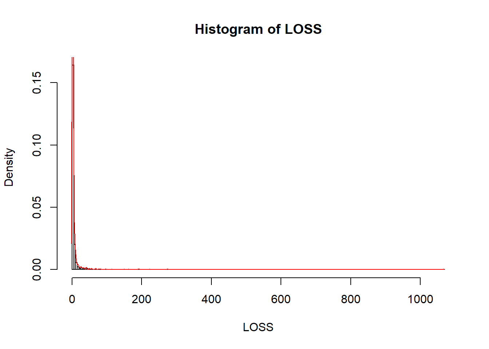
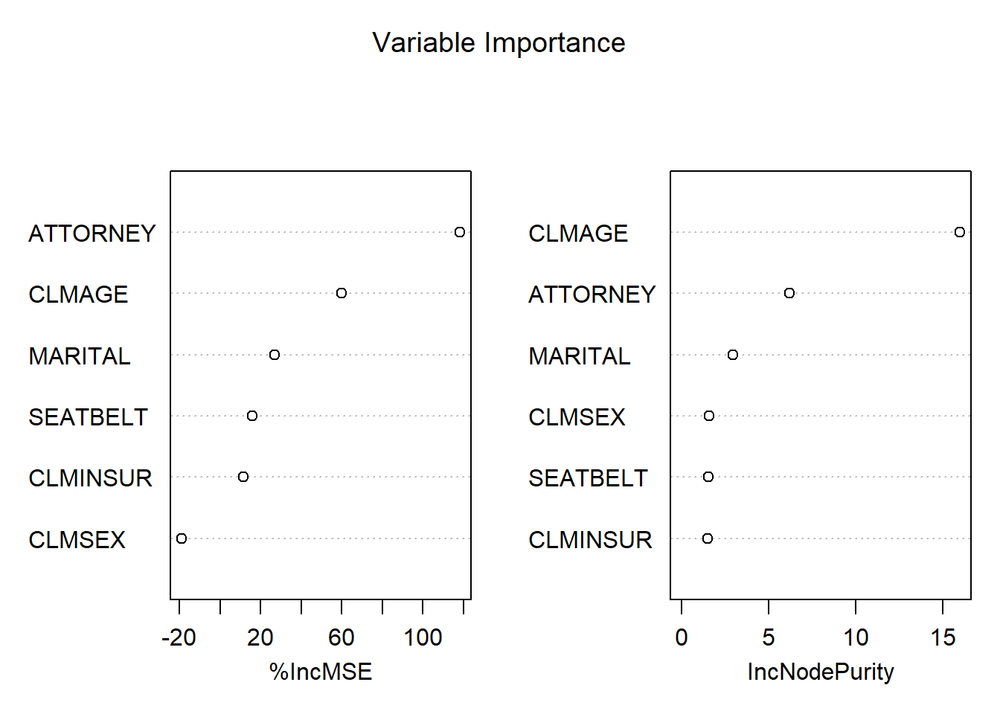
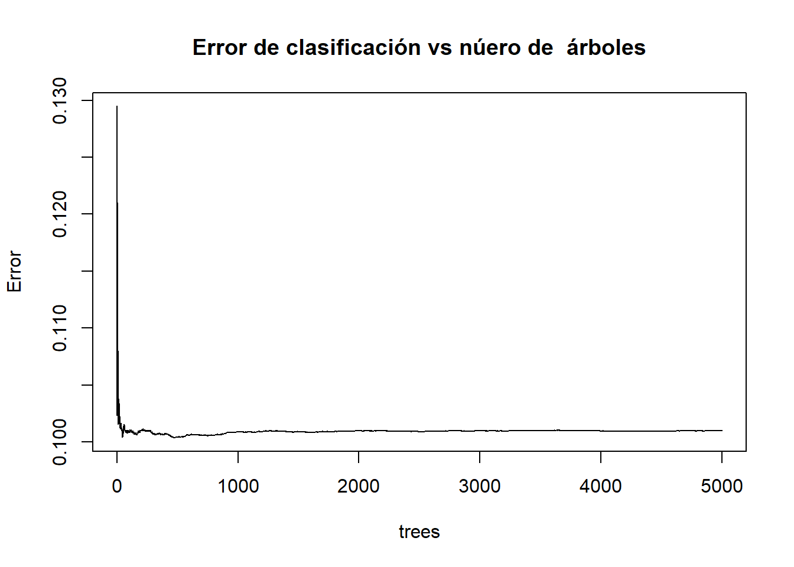
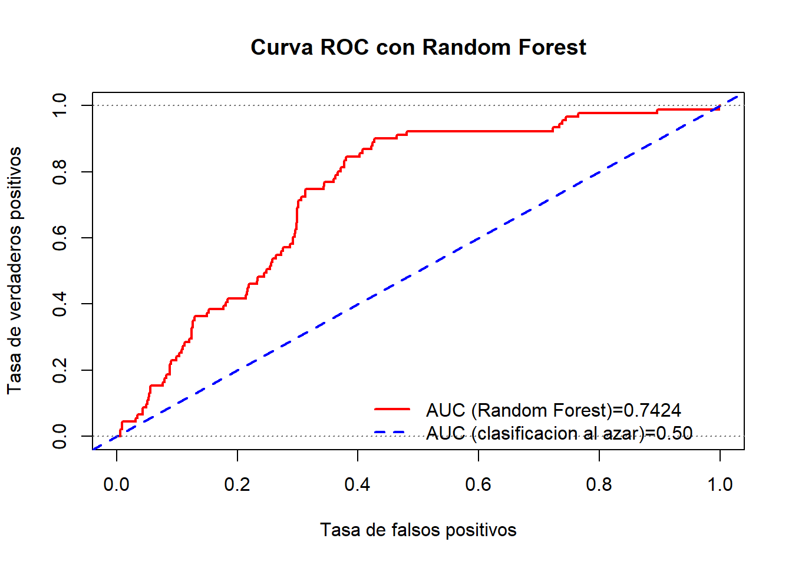
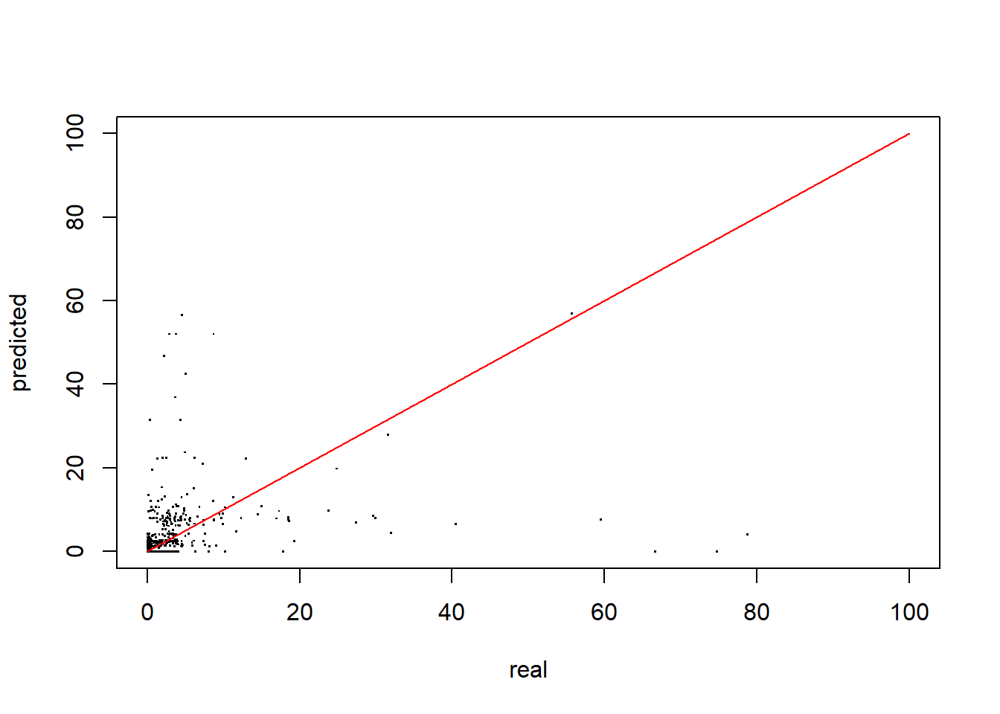

4.6 Práctica en R
Evaluaremos la calidad predictiva de dos modelos:
- Cuando la variable respuesta es binaria.
- Cuando la variable respuesta es contínua.
4.6.1 Preparación de los datos
Definimos el Entorno de Trabajo
El primer paso es crear una carpeta con nuestros modelos y resultados dentro de nuestro espacio de trabajo (proyecto).
- Obtenemos la ruta completa del directorio de trabajo7.
myWD <- getwd() - Elegimos un nombre para nuestra carpeta con resultados
myWorkingFolderName <- 'ModelResults' - Creamos la carpeta donde guardaremos nuestros resultados y ficheros
dir.create( paste0(getwd(),"/",myWorkingFolderName))Accedemos a los datos originales
- Cargamos la librería
insuranceDataque contiene los datos que utilizaremos8
if (!require(insuranceData)) install.packages('insuranceData')
library(insuranceData)- Para ver los contenidos de la librería
insuranceDataejecutamos:
data(package='insuranceData')Vemos que hay 10 datasets. Trabajaremos con el primero:
AutoBi(Automobile Bodily Injury Claims9).Cargamos el conjunto de datos seleccionado: pérdidas en accidentes de coches
data("AutoBi")Descripción de las 8 variables del conjunto de datos (tabla) ‘AutoBi’:
Casenum. Identificador de la reclamación (esta variable no se utiliza en los modelos)Attorney. Indica si el reclamante está representado por un abogado (1= Sí, 2 = No)Clmsex. Sexo del reclamante (1 = Hombre, 2 = Mujer)Marital. Estado Civil del reclamante (1 = Casado, 2 = Soltero, 3 = Viudo, 4 = divorciado/separado)Clminsur. Indica si el conductor del vehículo del reclamante estaba o no asegurado (1 = Si, 2 = No, 3 = No aplica)Seatbelt. Si el reclamante llevaba o no un cinturón de seguridad en el asiento infantil (1 = Si, 2 = No, 3 = No Aplica)Clmage. Edad del reclamante.Loss (*). La pérdida económica total del reclamante (en miles). Esta es la variable objetivo o dependiente del conjunto de datos.
Revisamos el contenido de la tabla y el tipo de datos que contiene
str(AutoBi)FALSE 'data.frame': 1340 obs. of 8 variables:
FALSE $ CASENUM : int 5 13 66 71 96 97 120 136 152 155 ...
FALSE $ ATTORNEY: int 1 2 2 1 2 1 1 1 2 2 ...
FALSE $ CLMSEX : int 1 2 1 1 1 2 1 2 2 1 ...
FALSE $ MARITAL : int NA 2 2 1 4 1 2 2 2 2 ...
FALSE $ CLMINSUR: int 2 1 2 2 2 2 2 2 2 2 ...
FALSE $ SEATBELT: int 1 1 1 2 1 1 1 1 1 1 ...
FALSE $ CLMAGE : int 50 28 5 32 30 35 19 34 61 NA ...
FALSE $ LOSS : num 34.94 10.892 0.33 11.037 0.138 ...- Exploramos el contenido con estadísticos descriptivos básicos
summary(AutoBi)FALSE CASENUM ATTORNEY CLMSEX MARITAL
FALSE Min. : 5 Min. :1.000 Min. :1.000 Min. :1.000
FALSE 1st Qu.: 8579 1st Qu.:1.000 1st Qu.:1.000 1st Qu.:1.000
FALSE Median :17453 Median :1.000 Median :2.000 Median :2.000
FALSE Mean :17213 Mean :1.489 Mean :1.559 Mean :1.593
FALSE 3rd Qu.:25703 3rd Qu.:2.000 3rd Qu.:2.000 3rd Qu.:2.000
FALSE Max. :34253 Max. :2.000 Max. :2.000 Max. :4.000
FALSE NA's :12 NA's :16
FALSE CLMINSUR SEATBELT CLMAGE LOSS
FALSE Min. :1.000 Min. :1.000 Min. : 0.00 Min. : 0.005
FALSE 1st Qu.:2.000 1st Qu.:1.000 1st Qu.:19.00 1st Qu.: 0.640
FALSE Median :2.000 Median :1.000 Median :31.00 Median : 2.331
FALSE Mean :1.908 Mean :1.017 Mean :32.53 Mean : 5.954
FALSE 3rd Qu.:2.000 3rd Qu.:1.000 3rd Qu.:43.00 3rd Qu.: 3.995
FALSE Max. :2.000 Max. :2.000 Max. :95.00 Max. :1067.697
FALSE NA's :41 NA's :48 NA's :189- Para llamar directamente a las variables por sus nombres en la tabla AutoBi utilizamos el comando
attach
attach(AutoBi)Exploramos la variable objetivo
LOSS es la variable objetivo una variable altamente asimétrica (con posibles outliers a la derecha o pérdida muy severa)10.
- Analizamos la variable target
summary(LOSS)FALSE Min. 1st Qu. Median Mean 3rd Qu. Max.
FALSE 0.005 0.640 2.331 5.954 3.995 1067.697- Analizamos la distribución de la variable target
hist(LOSS, breaks=300 , probability = T)
lines(density(LOSS), col="red",main="Loss distribution")
- Utilizamos una medida robusta (depende de la mediana y del IQR11) para segmentar los datos en dos clases:
1si las pérdidas son atípicamente altas o0si no lo son.
lsup <- median(LOSS) + 1.5*IQR(LOSS) # Criterio basado en estadisticos robustos
sum(LOSS>=lsup) # 153 datos de perdidas atipicamente altasFALSE [1] 153- (Opcional) Guardamos el gráfico del histograma de las pérdidas no severas
Path_to_graphics <- paste0(getwd(),"/","Graphics")
dir.create(Path_to_graphics)
png(paste0(Path_to_graphics,"/histograma.png"))
hist(LOSS[LOSS<lsup], breaks = 100, probability = T, xlab="loss (pérdida en miles US $)", main="Pérdida no severa")
lines(density(LOSS[LOSS<lsup]),col="red")
dev.off()FALSE png
FALSE 2Creamos el dataset de trabajo.
- Creamos un dataset o tabla de trabajo eliminando la variable CASENUM (id) y filtrando por la variable LOSS y el valor lsup= 72.22587 (miles).
df_autobi <- AutoBi[ , -match("CASENUM", colnames(AutoBi)) ] Fijamos los predictores categóricos como factores:
- Representado por un abogado: ‘1’ = representado por letrado y ‘2’ = no representado
df_autobi$ATTORNEY <- ordered(df_autobi$ATTORNEY, levels = 1:2) - Sexo: ‘1’ = hombre y ‘2’ = mujer
df_autobi$CLMSEX <- ordered(df_autobi$CLMSEX , levels = 1:2)- Estado civil: ‘1’ = casado, ‘2’ = soltero, ‘3’ = viudo y ‘4’ = divorciado / separado
df_autobi$MARITAL <- ordered(df_autobi$MARITAL , levels = 1:4)- Vehículo asegurado: ‘1’ = vehículo estaba asegurado y ‘2’= no lo estaba
df_autobi$CLMINSUR <- ordered(df_autobi$CLMINSUR, levels = 1:2) - Cinturón de seguridad: ‘1’ = llevaba cinturón abrochado y ‘2’ = no lo llevaba
df_autobi$SEATBELT <- ordered(df_autobi$SEATBELT, levels = 1:2)- Pérdida: ‘1’= pérdida severa y ‘2’= pérdida no severa
df_autobi$Y <- ifelse(df_autobi$LOSS>= lsup,1,0)- Exploramos el dataset que acabamos de crear y verificamos la proporción de casos con pérdida severa (11.42%)
summary(df_autobi)FALSE ATTORNEY CLMSEX MARITAL CLMINSUR SEATBELT CLMAGE
FALSE 1:685 1 :586 1 :624 1 : 120 1 :1270 Min. : 0.00
FALSE 2:655 2 :742 2 :650 2 :1179 2 : 22 1st Qu.:19.00
FALSE NA's: 12 3 : 15 NA's: 41 NA's: 48 Median :31.00
FALSE 4 : 35 Mean :32.53
FALSE NA's: 16 3rd Qu.:43.00
FALSE Max. :95.00
FALSE NA's :189
FALSE LOSS Y
FALSE Min. : 0.005 Min. :0.0000
FALSE 1st Qu.: 0.640 1st Qu.:0.0000
FALSE Median : 2.331 Median :0.0000
FALSE Mean : 5.954 Mean :0.1142
FALSE 3rd Qu.: 3.995 3rd Qu.:0.0000
FALSE Max. :1067.697 Max. :1.0000
FALSE - Exploramos la relación de la pérdida con los factores.
agg_loss_attorney <- aggregate(LOSS, by = list(ATTORNEY) , FUN= mean , na.rm=TRUE)
dimnames(agg_loss_attorney)[[1]] <- c("REPRESENTED","NOT REPRESENTED") ; dimnames(agg_loss_attorney)[[2]] <- c("ATTORNEY","LOSS")
agg_loss_clmsex <- aggregate(LOSS, by = list(CLMSEX) , FUN= mean , na.rm=TRUE)
dimnames(agg_loss_clmsex)[[1]] <- c("MALE","FEMALE") ; dimnames(agg_loss_clmsex)[[2]] <- c("CLMSEX","LOSS")
agg_loss_marital <- aggregate(LOSS, by = list(MARITAL) , FUN= mean , na.rm=TRUE)
dimnames(agg_loss_marital)[[1]] <- c("MARRIED","SINGLE","WIDOW","DIVORCED") ; dimnames(agg_loss_marital)[[2]] <- c("MARITAL","LOSS")
agg_loss_clminsur <- aggregate(LOSS, by = list(CLMINSUR) , FUN= mean , na.rm=TRUE)
dimnames(agg_loss_clminsur)[[1]] <- c("INSURED","NOT INSURED") ; dimnames(agg_loss_clminsur)[[2]] <- c("CLMINSUR","LOSS")
agg_loss_seatbelt <- aggregate(LOSS, by = list(SEATBELT) , FUN= mean , na.rm=TRUE)
dimnames(agg_loss_seatbelt)[[1]] <- c("SEATBELT","NOT SEATBELT") ; dimnames(agg_loss_seatbelt)[[2]] <- c("SEATBELT","LOSS")Creamos los sets train y test
- Aleatorizamos los datos y separamos el set de datos en train y test:
N=nrow(df_autobi)- Es recomendable fijar una semilla (seed) para los algoritmos de aleatorización internos de R
if (!require(caret)) install.packages('caret')
library(caret)
set.seed(123456)
inTrain <- createDataPartition(df_autobi$Y, times = 1, p = 0.7, list = TRUE)
dt_train <- df_autobi[inTrain[[1]],] # 938 casos
dt_test <- df_autobi[-inTrain[[1]],] # 402 casos
nrow(dt_train)FALSE [1] 938summary(dt_train)FALSE ATTORNEY CLMSEX MARITAL CLMINSUR SEATBELT CLMAGE
FALSE 1:471 1 :406 1 :439 1 : 77 1 :885 Min. : 0.00
FALSE 2:467 2 :523 2 :455 2 :833 2 : 17 1st Qu.:20.00
FALSE NA's: 9 3 : 10 NA's: 28 NA's: 36 Median :32.00
FALSE 4 : 25 Mean :33.06
FALSE NA's: 9 3rd Qu.:43.00
FALSE Max. :95.00
FALSE NA's :134
FALSE LOSS Y
FALSE Min. : 0.0050 Min. :0.0000
FALSE 1st Qu.: 0.7123 1st Qu.:0.0000
FALSE Median : 2.3645 Median :0.0000
FALSE Mean : 5.4656 Mean :0.1141
FALSE 3rd Qu.: 4.0263 3rd Qu.:0.0000
FALSE Max. :273.6040 Max. :1.0000
FALSE nrow(dt_test)FALSE [1] 402summary(dt_test)FALSE ATTORNEY CLMSEX MARITAL CLMINSUR SEATBELT CLMAGE
FALSE 1:214 1 :180 1 :185 1 : 43 1 :385 Min. : 0.00
FALSE 2:188 2 :219 2 :195 2 :346 2 : 5 1st Qu.:19.00
FALSE NA's: 3 3 : 5 NA's: 13 NA's: 12 Median :29.00
FALSE 4 : 10 Mean :31.31
FALSE NA's: 7 3rd Qu.:42.00
FALSE Max. :78.00
FALSE NA's :55
FALSE LOSS Y
FALSE Min. : 0.0050 Min. :0.0000
FALSE 1st Qu.: 0.5175 1st Qu.:0.0000
FALSE Median : 2.1645 Median :0.0000
FALSE Mean : 7.0917 Mean :0.1144
FALSE 3rd Qu.: 3.7782 3rd Qu.:0.0000
FALSE Max. :1067.6970 Max. :1.0000
FALSE Comprobamos si se que los conjuntos train y test se han formado correctamente
length(intersect(inTrain, setdiff(1:N,inTrain)))FALSE [1] 04.6.2 Clasificación
Vamos a construir un modelo para identificar los casos con pérdidas severas.
- El primer ejemplo lo hacemos con Random Forest
if (!require(randomForest)) install.packages('randomForest')
library(randomForest)- Creamos un objeto de clase ‘formula’ y se lo pasamos como argumento a la función
randomForest12
set.seed(123456)
fmla.rf1 <- as.formula(paste0("Y"," ~",paste0(colnames(df_autobi[,-c(7,8)]),collapse = "+"),collapse = ""))
rf1 <- randomForest( fmla.rf1,
data =dt_train,
ntree = 5000, # se ejecuta muy rapido, podemos utilizar ntree > = 2500
replace =TRUE,
mtry=4,
maxnodes =50,
importance = TRUE,
proximity = TRUE,
keep.forest = TRUE,
na.action=na.omit)- Exploramos el objeto con los resutados
rf1FALSE
FALSE Call:
FALSE randomForest(formula = fmla.rf1, data = dt_train, ntree = 5000, replace = TRUE, mtry = 4, maxnodes = 50, importance = TRUE, proximity = TRUE, keep.forest = TRUE, na.action = na.omit)
FALSE Type of random forest: regression
FALSE Number of trees: 5000
FALSE No. of variables tried at each split: 4
FALSE
FALSE Mean of squared residuals: 0.1009875
FALSE % Var explained: 4.3summary(rf1)FALSE Length Class Mode
FALSE call 11 -none- call
FALSE type 1 -none- character
FALSE predicted 759 -none- numeric
FALSE mse 5000 -none- numeric
FALSE rsq 5000 -none- numeric
FALSE oob.times 759 -none- numeric
FALSE importance 12 -none- numeric
FALSE importanceSD 6 -none- numeric
FALSE localImportance 0 -none- NULL
FALSE proximity 576081 -none- numeric
FALSE ntree 1 -none- numeric
FALSE mtry 1 -none- numeric
FALSE forest 11 -none- list
FALSE coefs 0 -none- NULL
FALSE y 759 -none- numeric
FALSE test 0 -none- NULL
FALSE inbag 0 -none- NULL
FALSE terms 3 terms call
FALSE na.action 179 omit numericstr(rf1)FALSE List of 19
FALSE $ call : language randomForest(formula = fmla.rf1, data = dt_train, ntree = 5000, replace = TRUE, mtry = 4, maxnodes = 50, imp| __truncated__ ...
FALSE $ type : chr "regression"
FALSE $ predicted : Named num [1:759] 0.00767 0.000161 0.629748 0.008208 0.022047 ...
FALSE ..- attr(*, "names")= chr [1:759] "2" "3" "4" "5" ...
FALSE ..- attr(*, "na.action")= 'omit' Named int [1:179] 1 9 19 25 27 40 43 46 50 51 ...
FALSE .. ..- attr(*, "names")= chr [1:179] "1" "10" "24" "30" ...
FALSE $ mse : num [1:5000] 0.102 0.129 0.121 0.115 0.113 ...
FALSE $ rsq : num [1:5000] 0.0302 -0.2272 -0.1473 -0.0907 -0.071 ...
FALSE $ oob.times : int [1:759] 1804 1942 1844 1864 1855 1780 1837 1782 1847 1807 ...
FALSE $ importance : num [1:6, 1:2] 0.017697 -0.001602 0.004106 0.000933 0.0009 ...
FALSE ..- attr(*, "dimnames")=List of 2
FALSE .. ..$ : chr [1:6] "ATTORNEY" "CLMSEX" "MARITAL" "CLMINSUR" ...
FALSE .. ..$ : chr [1:2] "%IncMSE" "IncNodePurity"
FALSE $ importanceSD : Named num [1:6] 1.50e-04 8.42e-05 1.54e-04 8.18e-05 5.65e-05 ...
FALSE ..- attr(*, "names")= chr [1:6] "ATTORNEY" "CLMSEX" "MARITAL" "CLMINSUR" ...
FALSE $ localImportance: NULL
FALSE $ proximity : num [1:759, 1:759] 1 0.179 0 0.318 0 ...
FALSE ..- attr(*, "dimnames")=List of 2
FALSE .. ..$ : chr [1:759] "2" "3" "4" "5" ...
FALSE .. ..$ : chr [1:759] "2" "3" "4" "5" ...
FALSE $ ntree : num 5000
FALSE $ mtry : num 4
FALSE $ forest :List of 11
FALSE ..$ ndbigtree : int [1:5000] 99 99 99 99 99 99 99 99 99 99 ...
FALSE ..$ nodestatus : int [1:99, 1:5000] -3 -3 -3 -3 -3 -3 -3 -3 -3 -3 ...
FALSE ..$ leftDaughter : int [1:99, 1:5000] 2 4 6 8 10 12 14 16 18 20 ...
FALSE ..$ rightDaughter: int [1:99, 1:5000] 3 5 7 9 11 13 15 17 19 21 ...
FALSE ..$ nodepred : num [1:99, 1:5000] 0.1265 0.2198 0.0363 0.0115 0.2832 ...
FALSE ..$ bestvar : int [1:99, 1:5000] 1 6 4 6 5 6 6 6 6 3 ...
FALSE ..$ xbestsplit : num [1:99, 1:5000] 1.5 20.5 1.5 15.5 1.5 27.5 34.5 0 16.5 3.5 ...
FALSE ..$ ncat : Named int [1:6] 1 1 1 1 1 1
FALSE .. ..- attr(*, "names")= chr [1:6] "ATTORNEY" "CLMSEX" "MARITAL" "CLMINSUR" ...
FALSE ..$ nrnodes : int 99
FALSE ..$ ntree : num 5000
FALSE ..$ xlevels :List of 6
FALSE .. ..$ ATTORNEY: num 0
FALSE .. ..$ CLMSEX : num 0
FALSE .. ..$ MARITAL : num 0
FALSE .. ..$ CLMINSUR: num 0
FALSE .. ..$ SEATBELT: num 0
FALSE .. ..$ CLMAGE : num 0
FALSE $ coefs : NULL
FALSE $ y : Named num [1:759] 1 0 1 0 0 0 0 0 0 1 ...
FALSE ..- attr(*, "na.action")= 'omit' Named int [1:179] 1 9 19 25 27 40 43 46 50 51 ...
FALSE .. ..- attr(*, "names")= chr [1:179] "1" "10" "24" "30" ...
FALSE ..- attr(*, "names")= chr [1:759] "2" "3" "4" "5" ...
FALSE $ test : NULL
FALSE $ inbag : NULL
FALSE $ terms :Classes 'terms', 'formula' language Y ~ ATTORNEY + CLMSEX + MARITAL + CLMINSUR + SEATBELT + CLMAGE
FALSE .. ..- attr(*, "variables")= language list(Y, ATTORNEY, CLMSEX, MARITAL, CLMINSUR, SEATBELT, CLMAGE)
FALSE .. ..- attr(*, "factors")= int [1:7, 1:6] 0 1 0 0 0 0 0 0 0 1 ...
FALSE .. .. ..- attr(*, "dimnames")=List of 2
FALSE .. .. .. ..$ : chr [1:7] "Y" "ATTORNEY" "CLMSEX" "MARITAL" ...
FALSE .. .. .. ..$ : chr [1:6] "ATTORNEY" "CLMSEX" "MARITAL" "CLMINSUR" ...
FALSE .. ..- attr(*, "term.labels")= chr [1:6] "ATTORNEY" "CLMSEX" "MARITAL" "CLMINSUR" ...
FALSE .. ..- attr(*, "order")= int [1:6] 1 1 1 1 1 1
FALSE .. ..- attr(*, "intercept")= num 0
FALSE .. ..- attr(*, "response")= int 1
FALSE .. ..- attr(*, ".Environment")=<environment: R_GlobalEnv>
FALSE .. ..- attr(*, "predvars")= language list(Y, ATTORNEY, CLMSEX, MARITAL, CLMINSUR, SEATBELT, CLMAGE)
FALSE .. ..- attr(*, "dataClasses")= Named chr [1:7] "numeric" "ordered" "ordered" "ordered" ...
FALSE .. .. ..- attr(*, "names")= chr [1:7] "Y" "ATTORNEY" "CLMSEX" "MARITAL" ...
FALSE $ na.action : 'omit' Named int [1:179] 1 9 19 25 27 40 43 46 50 51 ...
FALSE ..- attr(*, "names")= chr [1:179] "1" "10" "24" "30" ...
FALSE - attr(*, "class")= chr [1:2] "randomForest.formula" "randomForest"Gráfico de la importancia relativa de los predictores
varImpPlot(rf1,sort = T,main = "Variable Importance")
Gráfico del Error vs número de árboles
plot(rf1, main="Error de clasificación vs núero de árboles") 
Gráfico de la probabilidad condicional: \(P(Y=1|X_1 = ATTORNEY,\ldots,X_6=SEATBELT)\)
rf1.prediction <- as.data.frame(predict(rf1, newdata = dt_train))
summary(rf1.prediction)## predict(rf1, newdata = dt_train)
## Min. :0.00005
## 1st Qu.:0.00599
## Median :0.03651
## Mean :0.11984
## 3rd Qu.:0.21024
## Max. :0.77138
## NA's :179 dt_train$pred_rf1 <- rf1.prediction$`predict(rf1, newdata = dt_train)`
head(dt_train,3)## ATTORNEY CLMSEX MARITAL CLMINSUR SEATBELT CLMAGE LOSS Y pred_rf1
## 1 1 1 <NA> 2 1 50 34.940 1 NA
## 2 2 2 2 1 1 28 10.892 1 0.3807199932
## 3 2 1 2 2 1 5 0.330 0 0.0001324938 tail(dt_train,3)## ATTORNEY CLMSEX MARITAL CLMINSUR SEATBELT CLMAGE LOSS Y pred_rf1
## 1335 2 2 2 2 1 26 0.161 0 0.001142849
## 1338 2 2 1 2 1 39 0.099 0 0.012354460
## 1340 2 2 2 2 1 30 0.688 0 0.002329733 summary(dt_train)## ATTORNEY CLMSEX MARITAL CLMINSUR SEATBELT CLMAGE
## 1:471 1 :406 1 :439 1 : 77 1 :885 Min. : 0.00
## 2:467 2 :523 2 :455 2 :833 2 : 17 1st Qu.:20.00
## NA's: 9 3 : 10 NA's: 28 NA's: 36 Median :32.00
## 4 : 25 Mean :33.06
## NA's: 9 3rd Qu.:43.00
## Max. :95.00
## NA's :134
## LOSS Y pred_rf1
## Min. : 0.0050 Min. :0.0000 Min. :0.00005
## 1st Qu.: 0.7123 1st Qu.:0.0000 1st Qu.:0.00599
## Median : 2.3645 Median :0.0000 Median :0.03651
## Mean : 5.4656 Mean :0.1141 Mean :0.11984
## 3rd Qu.: 4.0263 3rd Qu.:0.0000 3rd Qu.:0.21024
## Max. :273.6040 Max. :1.0000 Max. :0.77138
## NA's :179 plot(density(dt_train$pred_rf1[!is.na(dt_train$pred_rf1)]), col="red" , xlab="Probabilidad" , main="Función de densidad estimada")
Vemos que hay (claramente) dos concentraciones (clases) de probabilidades de pérdida, una concentración en torno a la probabilidad de pérdida no severa (\(Y=0\)) y otra para la pérdida severa (\(Y=1\)).
Esto no lleva a la elección del punto de corte óptimo para obtener una regla de clasificación, es decir, un criterio para \(Y_{predicted}=1\) (pérdida severa), o bien, para \(Y_{predicted}=0\) (pérdida no severa). Una alternativa es el criterio de la Distancia de Kolmogorov-Smirnov (KS).
Métricas de evaluación del poder de clasificación
if (!require(ModelMetrics)) install.packages('ModelMetrics')
library(ModelMetrics)
if (!require(ROCR)) install.packages('ROCR')
library(ROCR)
if (!require(binaryLogic)) install.packages('binaryLogic')
library(binaryLogic)- Con el train creamos un objeto de tipo ‘prediction’13
rf1.pred <- prediction(as.numeric(rf1$predicted),as.numeric(rf1$y)) - Calculamos la Curva de ROC con la función ‘performance’ sobre el objeto ‘rf1’
rf1.perf <- performance(rf1.pred,"tpr","fpr")
## "fpr" = False positive rate. P(Yhat = + | Y = -). Estimated as: FP/N.
## "tpr" = True positive rate. P(Yhat = + | Y = +). Estimated as: TP/P.
plot(rf1.perf)
Elección del punto de corte: Criterio de la distancia de KS
- La distancia KS se calcula como: KS = abs(rf1.perf@y.values[[1]]-rf1.perf@x.values[[1]])
rf1.perf@alpha.values[[1]][rf1.perf@alpha.values[[1]]==Inf] <- round(max(rf1.perf@alpha.values[[1]][rf1.perf@alpha.values[[1]]!=Inf]),2)
KS.matrix= cbind(abs(rf1.perf@y.values[[1]]-rf1.perf@x.values[[1]]), rf1.perf@alpha.values[[1]])- Resumiendo
colnames(KS.matrix) <- c("KS-distance","cut-point")
head(KS.matrix)## KS-distance cut-point
## [1,] 0.000000000 0.7800000
## [2,] 0.001497006 0.7809184
## [3,] 0.002994012 0.7353170
## [4,] 0.004491018 0.6577091
## [5,] 0.005988024 0.6481896
## [6,] 0.005000987 0.6297476ind.ks <- sort( KS.matrix[,1] , index.return=TRUE )$ix[nrow(KS.matrix)] - El punto de corte óptimo de KS:
rf1.KScutoff <- KS.matrix[ind.ks,2] # := f(rf1.KS1)
rf1.KScutoff## cut-point
## 0.06415734# 0.04 - 0.05 Gráfico de la Curva ROC y su métrica: Área bajo la curva ROC (AUC)
- Cálculo de AUC mediante la función ‘performance’
rf1.auc1 <- performance(rf1.pred,"auc")@y.values[[1]]
rf1.auc1FALSE [1] 0.7424327-Cálculo de la curva ROC junto con la métrica AUC
#win.graph()
plot( rf1.perf , col='red' , lwd=2, type="l", xlab="Tasa de falsos positivos" , ylab="Tasa de verdaderos positivos", main="Curva ROC con Random Forest")
abline( 0 , 1 , col="blue" , lwd=2, lty=2)
abline( 0 , 0 , 1 , col="gray40" , lty=3)
legend( 0.4, 0.15 , c(paste0("AUC (Random Forest)=",round(rf1.auc1,4)),"AUC (clasificacion al azar)=0.50"),lty=c(1,2), lwd=c(2,2) ,col=c("red","blue"), bty="n")
- Se realizar el mismo gráfico de la curva ROC utilizando la librería
ggplot2. Para ello guardamos los datos en undata.frame
library("ggplot2")
df.perf <- data.frame(x=rf1.perf@x.values[[1]],y=rf1.perf@y.values[[1]])- Construcción del objeto gráfico con
ggplot2
#win.graph()
p <- ggplot(df.perf,aes(x=x,y=y)) + geom_path(size=1, colour="red")
p <- p + ggtitle("Curva ROC modelo Random Forest")
p <- p + theme_update(plot.title = element_text(hjust = 0.5))
p <- p + geom_segment(aes(x=0,y=0,xend=1,yend=1),colour="blue",linetype= 2)
p <- p + geom_text(aes(x=0.75 , y=0.3 , label=paste(sep ="","AUC (Random Forest) ) = ",round(rf1.auc1,4) )),colour="black",size=4)
p <- p + geom_text(aes(x=0.75 , y=0.25 , label=paste(sep ="","AUC (Coin toss) = ",round(0.50,4) )),colour="black",size=4)
p <- p + scale_x_continuous(name= "Tasa de falsos positivos")
p <- p + scale_y_continuous(name= "Tasa de verdaderos positivos")
p <- p + theme(
plot.title = element_text(size = 2),
axis.text.x = element_text(size = 10),
axis.text.y = element_text(size = 10),
axis.title.x = element_text(size = 12,face = "italic"),
axis.title.y = element_text(size = 12,face = "italic",angle=90),
legend.title = element_blank(),
panel.background = element_rect(fill = "grey"),
panel.grid.minor = element_blank(),
panel.grid.major = element_line(colour='white'),
plot.background = element_blank()
)
p
Métricas de evaluación del poder predictivo
- Calculamos la predicción en el test y evaluamos el poder de clasificación del modelo
rf1.pred_test <- as.data.frame(predict( rf1, newdata = dt_test))
dt_test$pred_rf1 <- rf1.pred_test$`predict(rf1, newdata = dt_test)` head(dt_test,3)## ATTORNEY CLMSEX MARITAL CLMINSUR SEATBELT CLMAGE LOSS Y pred_rf1
## 6 1 2 1 2 1 35 0.309 0 0.2279703
## 12 1 1 1 2 1 42 29.620 1 0.2159590
## 18 1 1 1 2 1 58 0.758 0 0.2047155tail(dt_test,3)## ATTORNEY CLMSEX MARITAL CLMINSUR SEATBELT CLMAGE LOSS Y pred_rf1
## 1336 2 1 2 2 1 NA 0.576 0 NA
## 1337 1 2 1 2 1 46 3.705 0 0.349066396
## 1339 1 2 2 1 1 18 3.277 0 0.004032191summary(dt_test)## ATTORNEY CLMSEX MARITAL CLMINSUR SEATBELT CLMAGE
## 1:214 1 :180 1 :185 1 : 43 1 :385 Min. : 0.00
## 2:188 2 :219 2 :195 2 :346 2 : 5 1st Qu.:19.00
## NA's: 3 3 : 5 NA's: 13 NA's: 12 Median :29.00
## 4 : 10 Mean :31.31
## NA's: 7 3rd Qu.:42.00
## Max. :78.00
## NA's :55
## LOSS Y pred_rf1
## Min. : 0.0050 Min. :0.0000 Min. :0.00005
## 1st Qu.: 0.5175 1st Qu.:0.0000 1st Qu.:0.00797
## Median : 2.1645 Median :0.0000 Median :0.03794
## Mean : 7.0917 Mean :0.1144 Mean :0.12531
## 3rd Qu.: 3.7782 3rd Qu.:0.0000 3rd Qu.:0.21666
## Max. :1067.6970 Max. :1.0000 Max. :0.75036
## NA's :70- Con el test creamos un objeto de tipo ‘prediction’ y calculamos la curva ROC
dt_test.pred <- prediction(as.numeric(rf1.pred_test$`predict(rf1, newdata = dt_test)`),dt_test$Y)
dt_test.perf <- performance(dt_test.pred,"tpr","fpr") - Evaluación del poder de clasificación del modelo RF1 vía curva ROC
rf1.test.auc <- performance(dt_test.pred ,"auc")@y.values[[1]]- Gráfico de la curva ROC para el test
#win.graph()
plot( dt_test.perf , col='red' , lwd=2, type="l" , main="Curva ROC modelo RF - test",xlab="Tasa de falsos positivos", ylab="Tasa de verdaderos positivos")
abline( 0 , 1 , col="blue" , lwd=2, lty=2)
abline( 0 , 0 , 1 , col="gray40" , lty=3)
legend( 0.4, 0.2 , c(paste0("AUC (Random Forest)=",round(rf1.test.auc,4)),"AUC (Coin toss)=0.50") ,lty=c(1,2), lwd=c(2,2) ,col=c("red","blue"), bty="n")
Métrica de error del clasificador RF:
- Error tipo I (\(\alpha\)): 22.50%, indica el error que se comete clasificando una pérdida ‘severa’ como ‘no severa’
- Error tipo II (\(\beta\)): 43.15%, indica el error que se comete clasificando una pérdida ‘no severa’ como ‘severa’
- % mala clasificación (\(%mc\)) : 40.66%, indica el % de veces que el modelo clasifica incorrectamente las pérdidas
- Accuracy = \(100 - %\): 59.34%, indica el % de veces que el modelo acierta clasificando las pérdidas
- Area bajo la curva ROC \(AUC\): 0.6988, medida global del poder de clasificación del modelo
- Finalmente calculamos la curva ROC junto con la métrica AUC
Resumiendo:
Una función útil para obtener rápidamente el análisis de un clasificador binario es la siguiente:
metricBinaryClass = function( fitted.model , dataset , cutpoint=NULL , roc.graph=TRUE){
# fitted.model : The Binary Classification model that is under evaluation. If provided, dataset contains all variables in the fitted model (target and predictors).
# dataset : If fitted.model is not provided, dataset should has only two columns, predictions and labels.
# cuttpoint : potimal cutoff or cutpoint to be used to split continuous predictions into two response categories of target variable
# roc.graph : If true, ROC curve graph for the model is shown
#install.packages("binaryLogic")
library(binaryLogic)
if( missing(fitted.model) | is.null(fitted.model) ){
tabl <- as.data.frame(dataset)
}
else {
if( class(fitted.model)[1] %in% c('glm','lm','randomForest.formula','randomForest') ){
tabl.pred <- as.data.frame(predict( fitted.model, newdata = dataset ))
tabl <- as.data.frame(cbind(tabl.pred[[1]], dataset[,'Y'] ))
tabl <- tabl[!is.na(tabl[[1]]),]
}
if( class(fitted.model)[1] %in% c("gbm") ){
tabl.pred <- as.data.frame(predict.gbm( fitted.model , newdata = dataset , n.trees = 5000 , type="response" ))
tabl <- as.data.frame(cbind(tabl.pred[[1]], dataset[,'Y'] ))
tabl <- tabl[!is.na(tabl[[1]]),]
}
if( class(fitted.model)[1] %in% c('svm.formula','svm') ){
tabl.pred <- as.data.frame(predict( fitted.model, newdata = dataset ))
ids_NAs <- na.index(dataset)
tabl <- as.data.frame( cbind(tabl.pred[[1]], dataset[-ids_NAs,'Y']) )
tabl <- tabl[!is.na(tabl[[1]]),]
}
}
colnames(tabl) <- c('predicted','actual')
# ROCR objects
require(ROCR)
obj.pred <- prediction(tabl$predicted,tabl$actual)
obj.perf <- performance(obj.pred,"tpr","fpr")
obj.auc <- performance(obj.pred,"auc")@y.values[[1]]
# For ROC curve:
obj.perf@alpha.values[[1]][obj.perf@alpha.values[[1]]==Inf] <- max(obj.perf@alpha.values[[1]][obj.perf@alpha.values[[1]]!=Inf])
# KS criteria
KS.matrix= cbind(abs(obj.perf@y.values[[1]]-obj.perf@x.values[[1]]), obj.perf@alpha.values[[1]])
# KS cutoff
# colnames(KS.matrix) <- c("KS-distance","cut-point")
ind.ks <- sort( KS.matrix[,1] , index.return=TRUE )$ix[nrow(KS.matrix)]
if( missing(cutpoint) | is.null(cutpoint) ) cutpoint <- KS.matrix[ind.ks,2]
if( !(is.binary(tabl)) ){
# Make predictions objs.
# Binary metrics
tp = sum( tabl$predicted > cutpoint & tabl$actual > cutpoint)
fp = sum( tabl$predicted > cutpoint & tabl$actual <= cutpoint)
tn = sum( tabl$predicted <= cutpoint & tabl$actual <= cutpoint)
fn = sum( tabl$predicted <= cutpoint & tabl$actual > cutpoint)
pos = tp+fn
neg = tn+fp
acc= 100*(tp+tn)/(pos+neg)
prec= 100*tp/(tp+fp)
sens= 100*tp/(tp+fn) # = tpr = recall = 1 - error alpha
spec= 100*tn/(tn+fp) # 1- error beta
fpr = 100*fp/neg # error beta (tipo II) = 1 - spec
fnr = 100*fn/pos # error alpha (tipo I) = 1- recall = 1- sens
}
if( is.binary(tabl) ){
tp = sum( tabl$predicted == 1 & tabl$actual == 1)
fp = sum( tabl$predicted == 1 & tabl$actual == 0)
tn = sum( tabl$predicted == 0 & tabl$actual == 0)
fn = sum( tabl$predicted == 0 & tabl$actual == 1)
pos = tp+fn
neg = tn+fp
acc= 100*(tp+tn)/(pos+neg)
prec= 100*tp/(tp+fp)
sens= 100*tp/(tp+fn) # = tpr = recall = 1 - error alpha
spec= 100*tn/(tn+fp) # 1- error beta
fpr = 100*fp/neg # error beta (tipo II) = 1 - spec
fnr = 100*fn/pos # error alpha (tipo I) = 1- recall = 1- sens
}
if(roc.graph==TRUE){
win.graph()
plot( obj.perf , col='red' , lwd=2, type="l",xlab="Tasa de falsos positivos" , ylab="Tasa de verdaderos positivos", main="Curva ROC modelo clasificación")
abline( 0.0 , 1.0 , col="blue", lwd=2, lty=2)
abline( 0.0 , 0.0 , 1 , col="gray40" , lty=3)
legend( 0.45, 0.2 , c(paste0("AUC (Model)=",round(obj.auc,4)),"AUC (Rolling dice)=0.50") ,lty=c(1,2), lwd=c(2,2) ,col=c("red","blue"), bty="n")
}
list(ClassError.tI=round(fnr,2), ClassError.tII=round(fpr,2), Accuracy=round(acc,2),Sensitivity = round(sens,2) , Specificity= round(spec,2), auc= obj.auc , Fisher.F1=round(2*prec*sens/(prec+sens),4) )
} metricBinaryClass( fitted.model = rf1 , dataset= dt_test , cutpoint=rf1.KScutoff , roc.graph=TRUE)## $ClassError.tI
## [1] 22.5
##
## $ClassError.tII
## [1] 43.49
##
## $Accuracy
## [1] 59.04
##
## $Sensitivity
## [1] 77.5
##
## $Specificity
## [1] 56.51
##
## $auc
## [1] 0.7056507
##
## $Fisher.F1
## [1] 31.31314.6.3 Regresión
Vamos a construir un modelo para prever las pérdidas.
Modelo con Random Forest en train
fmla.rf2 <- as.formula(paste0('LOSS','~',paste0(colnames(df_autobi[,-c(7,8)]),collapse = "+"),collapse = ''))
set.seed(112233) #recomendado
rf2 <- randomForest( fmla.rf2,
data =dt_train,
ntree = 5000,
replace =TRUE,
mtry=4,
maxnodes =50,
importance = TRUE,
na.action=na.omit)
summary(rf2)## Length Class Mode
## call 9 -none- call
## type 1 -none- character
## predicted 759 -none- numeric
## mse 5000 -none- numeric
## rsq 5000 -none- numeric
## oob.times 759 -none- numeric
## importance 12 -none- numeric
## importanceSD 6 -none- numeric
## localImportance 0 -none- NULL
## proximity 0 -none- NULL
## ntree 1 -none- numeric
## mtry 1 -none- numeric
## forest 11 -none- list
## coefs 0 -none- NULL
## y 759 -none- numeric
## test 0 -none- NULL
## inbag 0 -none- NULL
## terms 3 terms call
## na.action 179 omit numericstr(rf2)## List of 19
## $ call : language randomForest(formula = fmla.rf2, data = dt_train, ntree = 5000, replace = TRUE, mtry = 4, maxnodes = 50, imp| __truncated__
## $ type : chr "regression"
## $ predicted : Named num [1:759] 2.407 0.676 37.029 1.73 4.229 ...
## ..- attr(*, "names")= chr [1:759] "2" "3" "4" "5" ...
## ..- attr(*, "na.action")= 'omit' Named int [1:179] 1 9 19 25 27 40 43 46 50 51 ...
## .. ..- attr(*, "names")= chr [1:179] "1" "10" "24" "30" ...
## $ mse : num [1:5000] 566 483 441 401 427 ...
## $ rsq : num [1:5000] -0.707 -0.457 -0.328 -0.208 -0.286 ...
## $ oob.times : int [1:759] 1820 1870 1853 1846 1856 1840 1820 1899 1880 1876 ...
## $ importance : num [1:6, 1:2] 17.313 0.136 -3.726 3.199 4.752 ...
## ..- attr(*, "dimnames")=List of 2
## .. ..$ : chr [1:6] "ATTORNEY" "CLMSEX" "MARITAL" "CLMINSUR" ...
## .. ..$ : chr [1:2] "%IncMSE" "IncNodePurity"
## $ importanceSD : Named num [1:6] 1.215 1.018 1.116 0.38 0.743 ...
## ..- attr(*, "names")= chr [1:6] "ATTORNEY" "CLMSEX" "MARITAL" "CLMINSUR" ...
## $ localImportance: NULL
## $ proximity : NULL
## $ ntree : num 5000
## $ mtry : num 4
## $ forest :List of 11
## ..$ ndbigtree : int [1:5000] 99 99 99 99 99 99 99 99 99 99 ...
## ..$ nodestatus : int [1:99, 1:5000] -3 -3 -3 -3 -3 -3 -1 -3 -3 -3 ...
## ..$ leftDaughter : int [1:99, 1:5000] 2 4 6 8 10 12 0 14 16 18 ...
## ..$ rightDaughter: int [1:99, 1:5000] 3 5 7 9 11 13 0 15 17 19 ...
## ..$ nodepred : num [1:99, 1:5000] 4.96 4.6 23.76 7.19 1.9 ...
## ..$ bestvar : int [1:99, 1:5000] 5 1 6 3 6 3 0 6 2 3 ...
## ..$ xbestsplit : num [1:99, 1:5000] 1.5 1.5 37.5 3.5 20.5 1.5 0 25.5 1.5 1.5 ...
## ..$ ncat : Named int [1:6] 1 1 1 1 1 1
## .. ..- attr(*, "names")= chr [1:6] "ATTORNEY" "CLMSEX" "MARITAL" "CLMINSUR" ...
## ..$ nrnodes : int 99
## ..$ ntree : num 5000
## ..$ xlevels :List of 6
## .. ..$ ATTORNEY: num 0
## .. ..$ CLMSEX : num 0
## .. ..$ MARITAL : num 0
## .. ..$ CLMINSUR: num 0
## .. ..$ SEATBELT: num 0
## .. ..$ CLMAGE : num 0
## $ coefs : NULL
## $ y : Named num [1:759] 10.892 0.33 11.037 0.138 3.538 ...
## ..- attr(*, "na.action")= 'omit' Named int [1:179] 1 9 19 25 27 40 43 46 50 51 ...
## .. ..- attr(*, "names")= chr [1:179] "1" "10" "24" "30" ...
## ..- attr(*, "names")= chr [1:759] "2" "3" "4" "5" ...
## $ test : NULL
## $ inbag : NULL
## $ terms :Classes 'terms', 'formula' language LOSS ~ ATTORNEY + CLMSEX + MARITAL + CLMINSUR + SEATBELT + CLMAGE
## .. ..- attr(*, "variables")= language list(LOSS, ATTORNEY, CLMSEX, MARITAL, CLMINSUR, SEATBELT, CLMAGE)
## .. ..- attr(*, "factors")= int [1:7, 1:6] 0 1 0 0 0 0 0 0 0 1 ...
## .. .. ..- attr(*, "dimnames")=List of 2
## .. .. .. ..$ : chr [1:7] "LOSS" "ATTORNEY" "CLMSEX" "MARITAL" ...
## .. .. .. ..$ : chr [1:6] "ATTORNEY" "CLMSEX" "MARITAL" "CLMINSUR" ...
## .. ..- attr(*, "term.labels")= chr [1:6] "ATTORNEY" "CLMSEX" "MARITAL" "CLMINSUR" ...
## .. ..- attr(*, "order")= int [1:6] 1 1 1 1 1 1
## .. ..- attr(*, "intercept")= num 0
## .. ..- attr(*, "response")= int 1
## .. ..- attr(*, ".Environment")=<environment: R_GlobalEnv>
## .. ..- attr(*, "predvars")= language list(LOSS, ATTORNEY, CLMSEX, MARITAL, CLMINSUR, SEATBELT, CLMAGE)
## .. ..- attr(*, "dataClasses")= Named chr [1:7] "numeric" "ordered" "ordered" "ordered" ...
## .. .. ..- attr(*, "names")= chr [1:7] "LOSS" "ATTORNEY" "CLMSEX" "MARITAL" ...
## $ na.action : 'omit' Named int [1:179] 1 9 19 25 27 40 43 46 50 51 ...
## ..- attr(*, "names")= chr [1:179] "1" "10" "24" "30" ...
## - attr(*, "class")= chr [1:2] "randomForest.formula" "randomForest"Importancia Relativa de las Variables Input
varImpPlot(rf2,sort = T,main="Variable Importance")
Previsión en test
rf2.prediction <- as.data.frame(predict(rf2, newdata = dt_test))
dt_test$pred_rf2 <- rf2.prediction[[1]] head(dt_test, 3)## ATTORNEY CLMSEX MARITAL CLMINSUR SEATBELT CLMAGE LOSS Y pred_rf1
## 6 1 2 1 2 1 35 0.309 0 0.2279703
## 12 1 1 1 2 1 42 29.620 1 0.2159590
## 18 1 1 1 2 1 58 0.758 0 0.2047155
## pred_rf2
## 6 7.914295
## 12 8.539666
## 18 9.864992tail(dt_test, 3)## ATTORNEY CLMSEX MARITAL CLMINSUR SEATBELT CLMAGE LOSS Y pred_rf1
## 1336 2 1 2 2 1 NA 0.576 0 NA
## 1337 1 2 1 2 1 46 3.705 0 0.349066396
## 1339 1 2 2 1 1 18 3.277 0 0.004032191
## pred_rf2
## 1336 NA
## 1337 36.877666
## 1339 3.963606summary(dt_test, 3)## ATTORNEY CLMSEX MARITAL CLMINSUR SEATBELT CLMAGE
## 1:214 1 :180 2 :195 1 : 43 1 :385 Min. : 0.00
## 2:188 2 :219 (Other):200 2 :346 2 : 5 1st Qu.:19.00
## NA's: 3 NA's : 7 NA's: 13 NA's: 12 Median :29.00
## Mean :31.31
## 3rd Qu.:42.00
## Max. :78.00
## NA's :55
## LOSS Y pred_rf1 pred_rf2
## Min. : 0.0050 Min. :0.0000 Min. :0.00005 Min. : 0.377
## 1st Qu.: 0.5175 1st Qu.:0.0000 1st Qu.:0.00797 1st Qu.: 2.048
## Median : 2.1645 Median :0.0000 Median :0.03794 Median : 3.293
## Mean : 7.0917 Mean :0.1144 Mean :0.12531 Mean : 6.375
## 3rd Qu.: 3.7782 3rd Qu.:0.0000 3rd Qu.:0.21666 3rd Qu.: 7.881
## Max. :1067.6970 Max. :1.0000 Max. :0.75036 Max. :56.904
## NA's :70 NA's :70Graficamos la distribución de los valores estimados en el train
plot(density(dt_test$pred_rf2[!is.na(dt_test$pred_rf2) & dt_test$pred_rf2 < 30]), ylim= c(0,.25) , col="red" , main="")
lines(density(dt_test$LOSS[dt_test$LOSS<30]),col="blue",lty=1)
modelchecktest1 <- as.data.frame( cbind(real=dt_test$LOSS , predicted=dt_test$pred_rf2) )
modelchecktest1[is.na(modelchecktest1)] <- 0
summary(modelchecktest1)## real predicted
## Min. : 0.0050 Min. : 0.000
## 1st Qu.: 0.5175 1st Qu.: 1.310
## Median : 2.1645 Median : 2.422
## Mean : 7.0917 Mean : 5.265
## 3rd Qu.: 3.7782 3rd Qu.: 7.469
## Max. :1067.6970 Max. :56.904Error de ajuste del modelo
plot(modelchecktest1, xlim=c(0,100) , ylim=c(0,100) , pch="." , cex=1.5)
segments( 0, 0 , 100, 100 , col="red")
Resumiendo
Una función útil para medir el error:
modelMetrics(real=modelchecktest1$real, pred=modelchecktest1$predicted )## Accuracy metrics (global):## MAE(ref) = 8.9208## MAE = 7.765## RMSE = 54.5686## MAPE = 127.01## MAPE(sim) = 68.65## WMAPE = 109.49- Commentario: El error de ajuste del modelo de regresión es demasiado alto: \(RMSE= 54.57\) y el \(MAPE=127.19%\) Con estos errores de predicción, es preferible utilizar a un modelo de clasificación en lugar de un modelo de regresión.
Si queremos cambiar la ruta, podemos hacer ‘myWd <- setwd(“Ruta y Nombre de la carpeta”)’.↩
https://www.rdocumentation.org/packages/insuranceData/versions/1.0/topics/AutoBi↩
A loss is the injury or damage sustained by the insured in consequence of the happening of one or more of the accidents or misfortunes against which the insurer, in consideration of the premium, has undertaken to indemnify the insured.↩
The interquartile range of an observation variable is the difference of its upper and lower quartiles. It is a measure of how far apart the middle portion of data spreads in value↩
https://www.rdocumentation.org/packages/randomForest/versions/4.6-12/topics/randomForest↩
https://www.r-bloggers.com/a-small-introduction-to-the-rocr-package/↩
Ejercicio sugerido
Ajustar un Modelo de Regresión Logística para \(Y\) y comparar los resultados con los proporcionados por el Random Forest
Ajustar un Modelo de Regresión Lineal para \(LOSS\) y comparar los resultados con los proporcionados por el Random Forest